can be reduced to the index-1 system:
can be reduced to the index-1 system:A further complication with DAE systems of high index is that the usual numerical algorithms are generally incapable of controlling the error of integration, and this very often leads to failure, or, even worse, spurious solutions!
For these reasons, DAE systems of index higher than 1 are usually solved by reducing their index to 1 via differentiation with respect
to time. For instance, the index-2 system can be reduced to the index-1 system:
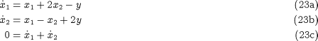
by differentiating  with respect to time. Note that it is not necessary to combine with and to obtain a purely algebraic equation. System can then be solved using standard algorithms and codes.
with respect to time. Note that it is not necessary to combine with and to obtain a purely algebraic equation. System can then be solved using standard algorithms and codes.
Of course, one immediate question is: "Will the solution of be the same as the solution of ? More specifically, will the solution of satisfy equation , which has now been replaced by its time differential ?". The answer is: "Yes, provided the initial conditions satisfy the consistency relations ."; in this case,
the initial value of the quantity 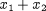 is zero
the time gradient of 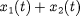 is zero for all times 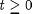 (cf. equation )
and, therefore, 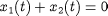 for all – hence is satisfied – at least in the exact mathematical sense.
A complication arises from the fact that, if system is solved numerically (rather than exactly), then equation will be satisfied only within a certain specified accuracy and not exactly. Over long time horizons, this may allow
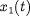 + 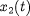 to deviate significantly from its correct value of 0. A way of avoiding this "drift" is to include both and in the set of equations being integrated, thereby making sure that both of them are satisfied to the required accuracy.
However, this leads to redundancy since now we have 4 equations in the 3 unknowns , and 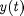. One way of resolving this redundancy is to treat 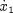 and  as completely distinct variables – effectively introducing an extra variable in the system:
as completely distinct variables – effectively introducing an extra variable in the system:
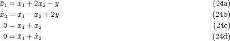
Here 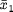 is a new variable bearing no relation to as far as the numerical solution is concerned. This is now an index-1 system that can be solved to arbitrary accuracy
using standard codes.